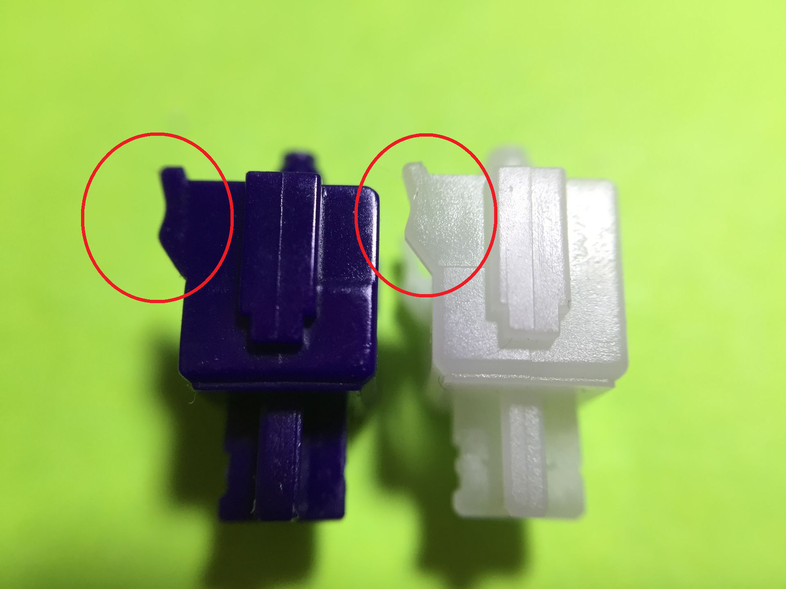
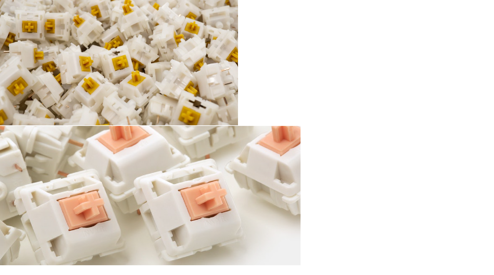
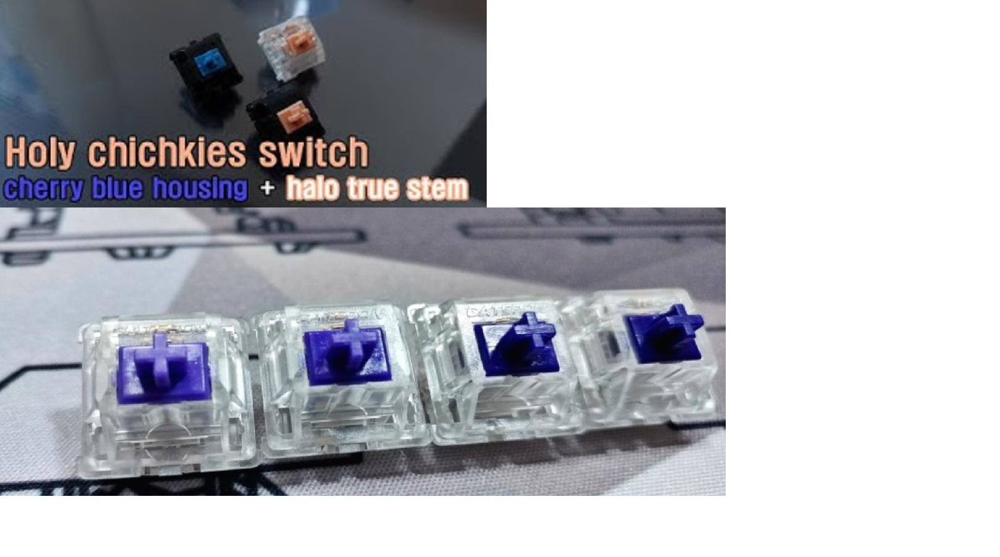

특징
-리니어와는 다르게 접점부를 긁으며 내려갈 때, 돌기가 존재하여 접점부와의 마찰을 통해 독특한 구분감을 만들어내는 스위치.
-체리 사의 체리 갈축, 에버글라이드 사의 제이드 블랙, zeal PC의 질리오스, 오테뮤 사의 u4t, 카일 사의 홀리판다 등이 있다.
-돌기의 굴곡과 접점부와의 마찰 정도에 따라 타건감과 타건음이 확 달라진다.
-최근에는 스위치의 기둥이 바닥을 치는 넌클릭 스위치가 유행한다.
-또한 체리 사의 하우징과 카일 사의 홀리판다 스템을 이용하여 홀리치키라는 스위치를 만들어내기도 했다.
-리니어와 마찬가지로 윤활을 진행하면 더욱 좋은 키감을 얻을 수 있다. 윤활 방법에는 돌기와 접점부 둘 다 윤활하거나 걸림을 그대로 유지하기 위해서 돌기,접점부는 아예 안 하기도 한다. -- 윤활 Click
체리 넌클릭
 같은 스위치라도 조합에 따라 다르다.
같은 스위치라도 조합에 따라 다르다.
-체리 넌클릭은 갈축 / 백축 등으로 구분. 체리 갈축이 대중적이다.
-체리 리니어와 마찬가지로 생산 시기로 세대를 구분한다.
-생산 설비가 노후화됨에 따라 플라스틱 사출에 문제가 발생하였고, 그때마다 설비를 재정비하였다.
#세대 구분: 구 갈축 / 신 갈축 / 초기신신갈 /신신 갈축 / 삼신 갈축
-체리 백축은 체리 갈축보다는 걸림이 강하며, 작동 압력도 무겁다. 보통은 스프링을 교체하여 사용한다.
-걸림이 상당히 약해서 호불호가 크게 갈린다.
-모든 넌클릭 제품을 통틀어 가장 접점부 소음이 적지만, 체리 리니어와 마찬가지로 서걱임이 굉장히 심하여 윤활을 필요로 한다.
-체리 리니어와 마찬가지로, RGB 모델은 일반적인 체리축과는 다른 재질로 되어 있어 키감이 상당히 다르다. 빈 소리와 좋지 못한 접점부 때문에 Non-RGB, 검정 하우징을 선호한다.
오테뮤, 카일
 홀리판다와 u4t-오테뮤 사의 -u4t와 카일 사의 -홀리판다.
-중저가 제품을 공략하던 카일 사가 먼저 홀리판다를 냈고 대히트를 쳤다. 이후 오테뮤 사가 u4t를 출시하여 다시 상당한 지분을 가져왔다.
-걸림 : 홀리판다 < u4t
-홀리판다는 채터링 문제와 잡소리 이슈가 있었다. u4t는 오테뮤 사의 고질적인 내구도 문제를 상당히 해결한 듯하다.
-홀리판다는 상당히 경쾌한 스위치이고, u4t는 정갈한 스위치이다.
-홀리판다의 걸림은 짧고 간결하고, u4t의 걸림은 길고 둥글다.
-무보강 혹은 다양한 보강판 조합으로 커스텀하여 사용한다.
-홀리판다는 1알 당 1400원, u4t는 1알 당 750원이다.
zealPC, 홀리치키(체리+카일)
-둥근 걸림을 가진 -질리오스와 강한 걸림을 가진 -홀리치키.
-홀리치키처럼 여러 스위치를 혼합하여 사용하는 경우가 많다. 홀리치키 = 체리 하부/상부 하우징 + 홀리판다 스템(십자 부분, 키캡 꽂는 부분)
-홀리치키의 걸림은 상당해서 장시간 타건에는 적합하지 않다.
-홀리치키의 경우 1알 당 약 1천 원, 질리오스는 1알 당 약 1400원이다.
-홀리치키의 경우, GMK 키캡을 사용한다면 체리 상부 하우징에 제약이 있다.
에버글라이드와 저소음 넌클릭
-에버글라이드 제이드블랙: 강한 바닥 때리는 소리, 강한 걸림.
뼈마디가 부딫치는 소리가 나는 스위치이다. 걸림도 상당해서 장시간 타건하기 힘들 수 있다.
-게이트론 저소음 갈축 :스위치에 댐퍼(실리콘)을 내장해서, 스위치 누르는 소리를 크게 줄인 스위치이다. 체리 사의 저소음 축도 댐퍼를 장착한 것.
게이트론 사의 저소음 축은 댐퍼 내구도 이슈가 있어 아쉽지만, 주관적으로 저소음 갈축만큼은 그것을 감안하고 사용해도 될 정도로 타건감이 좋다.